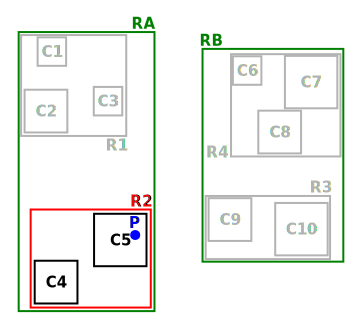

R-tree et applications
Une histoire de graphe
Supposons qu’on veuille implémenter un calculateur d’itinéraire permettant de retrouver le plus court chemin entre deux lieux quelconques de Bordeaux. Par exemple, on veut trouver le plus court chemin entre la place de la Victoire et "chez moi".
Pour cela, on dispose d’une liste de toutes les rues de Bordeaux, accompagnées de leur géométrie. La géométrie d’une rue est vue comme une liste de N segments consécutifs, donc une liste de N+1 points GPS.
Par exemple, considérons la rue nommée Place de la Victoire ci-dessous :
La géométrie de cette rue peut être représentée par les 11 paires de {latitude+longitude} suivants :
À partir de ces données, on peut stocker les rues de Bordeaux en tant qu’arêtes d’un graphe dont les poids sont les longueurs des rues, et les noeuds sont les extrémités de ces rues :
Chaque noeud N a pour identifiant unique sa position GPS, c’est à dire son couple {latitude+longitude}. Ce bon vieux Dijkstra nous donnera le plus court chemin entre un noeud de départ et un noeud d’arrivée.
Oui mais…
Ce que l’algorithme de Dijkstra attend en entrée, ce sont un noeud de départ et un noeud d’arrivée, c’est à dire deux positions GPS de noeuds du graphe (i.e. d’extrêmités de rue). Que vais-je donner à manger à Dijkstra si je souhaite partir non pas d’un noeud du graphe, mais plutôt d’une position quelconque du plan ?
Il nous faut une étape préliminaire, cœur du présent post : à partir d’une position quelconque X, je veux retrouver le noeud du graphe N₀ qui en est le plus proche, qui servira de noeud de départ à l’algorithme de Dijkstra :
C’est une instance d’un problème plus général : la recherche du plus proche voisin.
One solution : revolution rectangulation
Le R-tree, inventé en 1984 par Antonin GUTTMAN, permet de résoudre ce type de problème d’une façon sympa. C’est une sorte de généralisation à N dimensions du B-tree, mais il n’est pas nécessaire d’avoir entendu parler du B-tree pour lire le présent post.
Rectangle englobant
L’idée maîtresse est de proposer comme critère de "tri" des éléments géométriques à indexer… leur rectangle englobant minimal (Minimal Bounding Rectangle = MBR dans la littérature) : le R du R-tree est là pour rectangle.
Avant de résoudre notre problème de noeud dans un graphe, on va illustrer le principe de fonctionnement en supposant qu’on cherche à stocker un jeu de 10 carrés du plan. Par exemple, ces carrés peuvent être des représentations de villes :
Un R-tree est un arbre (!) équilibré, et dont les données sont stockées dans les noeuds terminaux (leaf-nodes). Dans notre exemple, chaque noeud a au minimum 2 et au maximum 3 cellules. Les cellules des leaf-nodes contiennent les données indexées, et les cellules des nodes intermédiaires pointent vers les noeuds fils :

Le principe, c’est que chaque cellule d’un leaf-node contient une donnée géométrique à stocker, assortie de son rectangle englobant minimal. Dans notre exemple, c’est facile : le rectangle englobant d’un carré C, a les mêmes dimensions que le carré lui-même.
De leur côté, chaque cellule d’un node intermédiaire contient le rectangle qui englobe tous les rectangles englobants des cellules son noeud fils. Si c’est pas clair dit comme ça, ça ira mieux avec le schéma : C1, C2 et C3 appartiennent au même leaf-node, dont le rectangle englobant minimal est R1 :
Dans l’arbre, ça se traduit par le fait que la cellule parente du leaf-node contenant C1+C2+C3 stocke R1, rectangle minimal permettant d’englober C1, C2 et C3 :
De même, C4 et C5 appartiennent au même node dont le rectangle englobant est R2.
Ce principe reste valable pour le niveau supérieur : R1 et R2 appartenant au même noeud, et ils sont tous deux englobés par un rectangle minimal RA :
Du coup dans l’arbre, le noeud parent de R1 et R2 stocke RA également :

Vous l’aurez compris : à chaque niveau de l’arbre, on stocke le rectangle englobant l’ensemble des éléments du noeud fils, et ce jusqu’aux feuilles de l’arbre, où les rectangle englobants sont ceux des éléments géométriques stockés dans l’arbre :
Et ça sert à quoi ?
Cette organisation par rectangles englobants est puissante et permet de faire des recherches de façon très efficace, en utilisant des algorithmes de type branch and bound. En deux mots, l’idée est d’éviter d’explorer tout l’arbre en élaguant (prune en anglais) au plus tôt les branches de l’arbre pour lesquelles on peut dire à coup sûr qu’elle ne contiennent pas la solution recherchée.
Prenons comme exemple la requête suivante : à quel carré appartient le point P ?
Ça peut paraître naïf comme question lorsqu’on regarde le schéma, mais pour un algo, c’est loin d’être aussi évident : si on itère naïvement sur tous les carrés pour renvoyer celui qui vérifie le prédicat, notre algo est en O(N). Ça peut vite être trop lourd, si on indexe des millions de carrés…
Mais si ce million de carrés est indexé dans un R-tree, trouver celui qui contient P, c’est fastoche la brioche :
-
on commence par itérer sur les rectangles du noeud racine : RA et RB. Pour chacun d’eux, on regarde s’il contient P :

-
RB ne contient pas P, donc aucun rectangle d’un fils direct de RB ne peut contenir P. Récursivement, aucun leaf-node de la branche RB de l’arbre ne peut contenir P : on peut élaguer (prune) cette branche de l’arbre car il est inutile de l’explorer.
-
en revanche, RA contient P, il SE PEUT donc (mais ça n’est pas sûr) que l’un des leaf-nodes de la branche RA contiennent P → il faut explorer cette branche de l’arbre pour le vérifier.
-
on itère sur les rectangles fils de RA. Pour chacun d’eux, on regarde s’il contient P :
-
R1 ne contient pas P, inutile d’explorer cette sous-branche de l’arbre. En revanche, R2 contient P, on va explorer tous les rectangles fils de R2 :
 -
Le noeud fils de R2 étant un leaf-node, itérer sur ses cellules revient à itérer sur les données géométriques qu’il contient (ici, des carrés), et on peut enfin constater que c’est C5 qui contient P :-)
On voit que l’intérêt du R-tree est de nous permettre d'élaguer au plus tôt des branches à ne pas explorer. Dans notre exemple simpliste, la seule branche explorée est la suivante :
Dans des cas réels, la situation est rarement aussi simple, notamment parce que des rectangles englobants de nodes différents peuvent se chevaucher, nous forçant à explorer plusieurs sous-branches, mais le principe général ne change fondamentalement pas.
Retour à notre problème initial
Bon, tout ça c’est bien joli, mais on ne cherche pas à trouver un carré du plan, mais plutôt le noeud du graphe le plus proche d’un point GPS quelconque !
Le principe reste le même : chaque niveau de l’arbre stocke le rectangle enblobant d’un ensemble de noeuds du graphe. En revanche, la recherche du plus proche voisin est un poil plus compliquée, car on ne peut pas élaguer des branches de l’arbre aussi directement qu’avant, sous peine de risquer de manquer des points plus proches :
Le principe "branch and bound" ne change pas cependant : on se débrouille pour élaguer le plus vite possible les branches dont on peut dire à coup sûr qu’elles ne contiennent pas le plus proche voisin recherché.
Je ne vais pas expliquer en détail la façon de procéder, vous trouverez ici la première proposition d’implémentation d’une requête de nearest neighbour sur un R-tree, qui a été améliorée plusieurs fois depuis.
Ce qu’il faut retenir, c’est que le R-tree permet tout à fait de répondre efficacement aux recherches de plus proches voisins, et donc à notre problème initial.
Let me see the code
Voyons toutes ces belles notions mises en pratique. On va utiliser l’implémentation du R-tree par boost::geometry pour répondre à la problématique posée en début de post. En plus des extraits dans le présent post, vous trouverez ici le code complet, ses dépendances, et ce qu’il faut pour le compiler.
À partir d’un extract OSM des rues de Bordeaux, on peut utiliser libosmium pour le parser, et construire le R-tree à requêter avec les extrémités des rues. Voici une façon d’insérer un noeud du graphe (assorti de son id de node OSM) dans un R-tree :
namespace bg = boost::geometry;
namespace bgi = boost::geometry::index;
using Point = bg::model::point<double, 2, bg::cs::spherical_equatorial<bg::degree> >;
using NodePoint = std::pair<Point, osmium::object_id_type>;
using RTree = bgi::rtree< NodePoint, bgi::linear<8> >;
RTree rtree;
m_rtree.insert({
{-0.572297, 44.831100}, // coordonnées du point
624671161 // id du node OSM
});Une fois que le R-tree est construit, on peut le requêter pour trouver le node OSM le plus proche d’un point quelconque donné :
// point quelconque proche de la Place de la Victoire :
const Point REQUESTED_POINT = {0.572555, 44.831067};
std::vector<NodePoint> result;
rtree.query(bgi::nearest(REQUESTED_POINT, 1), std::back_inserter(result));
auto nearest_nodepoint = result.front();Histoire d’être sûr qu’on n’a pas requêté un point en dehors de la zone couverte, on peut également afficher la distance entre le node et le point requêté :
auto distance = bg::distance(
nearest_nodepoint.first,
REQUESTED_POINT,
bg::strategy::distance::haversine<double>(6'371'000)
);
std::cout << "Nearest node is " << nearest_nodepoint.second << " at " << distance << " meters." << "\n";Et voilà : le noeud du graphe le plus proche du point -0.572555;44.831067 est le node OSM d’id 4068957236 \o/
Pour conclure
Ce qu’il faut retenir : le R-tree est un moyen d’indexer des données par leur rectangle englobant. Il permet de les requêter efficacement sur des critères géométriques, comme "quel est l’élément qui contient ce point ?" ou "quels sont les 30 éléments les plus proches de ce point ?".
Le R-tree est loin d’être la seule façon d’indexer des données spatiales, par exemple on peut utiliser un kd-tree si les données sont ponctuelles et statiques. Utiliser un quadtree est une alternative possible pour des données dynamiques, mais le R-tree semble le plus souvent permettre des requêtes plus rapides.
Dans la vraie vie
L’implémentation actuelle du projet OSRM, un moteur de calcul d’itinéraires associé au projet OSM, utilise un R-tree pour adresser précisément le problème qui a servi d’illustration à ce post : trouver dans un graphe le node le plus proche d’un point donné.
Parmi les features de PostGIS, l’extension de postgres permettant de traiter des données géographiques, on retrouve l’indexing spatial, qui utilise un R-tree. C’est également le cas d’Oracle Spatial and Graph.
Côté librairies, les implémentations de R-tree ne manquent pas. On a utilisé plus haut une implémentation en C++ dans boost::geometry ; Vladimir AGAFONKIN (l’auteur de Leaflet, librairie de cartographie en javascript) a écrit rbush, une implémentation de R-tree en javascript.
Pour les curieux
Pour ne pas sucharger ce post déjà dense, j’ai laissé pas mal de points de côté, vous pouvez allègrement les ignorer en première lecture :
Contrairement à ce que j’ai illustré plus haut, l’utilisation canonique d’un R-tree n’est pas le stockage mais plutôt l’indexation de données géométriques. Concrètement, les données vivent ailleurs que dans le R-tree (par exemple dans une table d’une base de données), et chaque cellule d’un node du R-tree contient un couple {pointeur+rectangle englobant}. Prenons comme exemple une base de données, dont une table un pointeur vers une ligne de la table le rectangle minimal englobant le polygone des limites géographiques de la commune TL;DR : au lieu de stocker des données, chaque cellule d’un leaf-node stocke un pointeur vers ces données. Si je mentionne ce contexte d’indexation dans une base de données, ce n’est pas anodin : l’un des intérêts du R-tree est qu’il est redoutablement efficace lorsqu’il est stocké sur disque. Pour comprendre pourquoi, il faut savoir que les IO disques sont des ordres de grandeurs plus lentes que les opérations effectuées par le CPU. Elles ont de bonnes chances d’être les goulots d’étranglements d’une requête utilisant l’index. Or, lorsque le CPU récupère des données depuis le disque dur, ces données sont transférées en pages de taille constante, par exemple 4 kio. Si notre application manipule les données par blocs plus petits (par exemple 1 kio), on effectue alors une coûteuse IO disque… de laquelle on jettera 3 kio à la poubelle pour n’en lire qu'1 kio ! De même, on jettera également 3 kio à la poubelle si on manipule des blocs de 5 kio : l’idéal serait donc de se débrouiller pour manipuler des données par blocs de "tout pile 4 kio" : chaque IO serait alors "rentabilisée". Or, avec le R-tree (et c’est également le cas avec son cousin, le B-tree), le nombre maximal de cellules par node est un paramètre qu’on peut choisir statiquement : dans les illustrations ci-dessus, chaque node contient 3 cellules, mais j’aurais aussi bien pu en mettre 5, 50 ou 500. De plus, la taille de chaque cellule est fixe est connue statiquement : c’est la taille d’un pointeur + la taille nécessaire pour stocker un rectangle. On peut donc ajuster le nombre maximum d’éléments par node, de sorte que la taille d’un node … fasse tout pile 4 kio ! On minimise ainsi le nombre de ces coûteuses IOs disque qui sont nécessaires pour traverser l’index \o/ À titre d’exemple, le rtree d’OSRM a une taille de node de 4kio par défaut. Pour le cas des R-tree stockés en RAM (comme dans l’exemple avec boost::geometry donné plus haut), il semblerait intéressant au premier abord d’ajuster la taille d’un node pour que celui-ci fitte tout pile dans une cache line. Mais apparemment, ce n’est pas aussi simple, et il vaut mieux prendre une taille de node plus grande. De toutes façons, ici comme partout ailleurs, la règle d’or s’applique : si les perfomances comptent, il faut benchmarker ! Tout comme le quadtree (mais à la différence du kd-tree), le R-tree n’est pas limité à l’indexation de points et de carrés : n’importe quel objet géométrique auquel on peut associer un rectangle englobant minimal peut y être indexé, par exemple des ellipses. D’ailleurs, les exemples ci-dessus sont donnés en dimension 2, i.e. sur un plan, mais le R-tree est utilisable en dimension quelconque, à condition de généraliser la notion de "rectangle englobant" en un N-uple d’intervalles, un sur chaque axe : en dimension 2, un rectangle est le 2-uple {intervalle sur l’axe des abscisses ; intervalle sur l’axe des ordonnées}. Enfin, signalons que l’un des intérêts des R-tree est d’être (comme le B-tree) un arbre qui s’auto-équilibre : il peut donc servir pour indexer les données d’une base de données dynamique (auquel on ajoutera / supprimera des éléments géométriques) à la différence, par exemple du kd-tree, qu’on doit reconstruire de zéro si les données sont modifiées. Côté requêtes, le R-tree permet des choses assez variées : appartenance d’un point, intersection ou recouvrement d’éléments géométrique, plus proches voisins, … Voici par exemple les prédicats que proposent boost::geometry. Attention toutefois : supposons que vous fassiez une requête du genre "quels sont les points indexés qui sont inclus dans cet hexagone", et que l’hexagone couvre la majorité de l’espace des points, l’utilisation de l’index va ralentir la requête : aucune branche de l’arbre ou presque ne sera élaguée, et on va donc tout explorer : on aurait mieux fait de tester linéairement TOUS les points de l’espace, ce qui nous aurait évité d’avoir à traverser l’index. Ce "défaut" n’est pas propre aux R-tree, il est valable pour tous les index : utilisés à mauvais escients, ils peuvent ralentir les requêtes. Les SGBD ont des query planners en charge de prédire si ça vaut le coup d’utiliser l’index ou non pour répondre à la requête, cf. la doc postgresql ici ou là. Le R-tree est sensible à l’ordre dans lequel les données y sont insérées : 2 ordres d’insertions différents produiront deux R-tree différents, et l’un sera plus efficace que l’autre pour répondre aux requêtes ! La complexité (et l’intérêt) du R-tree est liée à la façon dont les données sont gérées dans l’arbre : Comment organiser les données au sein d’un R-tree pour que les requêtes soient les plus efficaces possibles ? Comment limiter le recouvrement entre les rectangles englobants de deux noeuds frères ? Que se passe-t-il quand on insère un nouvel élément ? Et notamment, quid si cette insertion dépasse la capacité maximale du noeud destinée à la contenir (node overflow) ? Et pour la suppression d’un élément ? Le papier original propose une implémentation (et même deux, dans le cas des node overflow) répondant à ces questions, mais il existe une ribambelle de structures et algorithmes dérivés du R-tree original. Elles peuvent améliorer la construction initiale d’un R-tree à partir d’un jeu de données statiques (e.g. l’algo qu’utilise OSRM pour remplir son R-tree) ou bien la réorganisation des données lors des modifications dynamiques (e.g. le R*-tree, qui permet de mieux répartir les rectangles englobants en limitant leur recouvrement et leur étalement, et qui semble être massivement utilisé à la place du R-tree original), ou encore modifier le contenu des nodes pour fonctionner plus efficacement avec les caches des processeurs (e.g. le CR-tree). Le sujet est tellement vaste qu’on peut en écrire des livres entiers. Le mot de la fin : si le sujet vous a intéressé, je vous recommande vivement d’aller lire l’article original : il est particulièrement abordable.
FACULTATIF : des infos complémentaires
stockage vs. indexation
cities contient la liste des >35k communes de France ; chaque ligne de la table contient les infos associées à la commune : son nom, le nombre de ses habitants, leur revenu médian, ainsi que — détail crucial — le polygone représentant ses limites géographiques. Si un R-tree est utilisé pour indexer cette table des communes sur leurs limites géographiques, chaque leaf-node du R-tree contiendra N cellules, et chaque cellule contiendra :
cities (par exemple, un offset dans le fichier sur disque)taille de node optimale
ce qu’on indexe, et ce qu’on requête
Structures dérivées